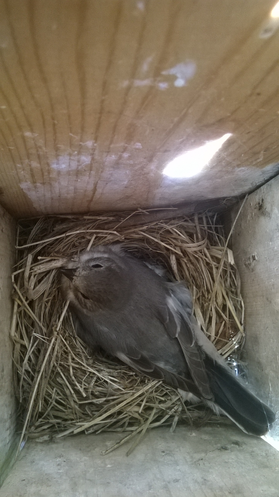
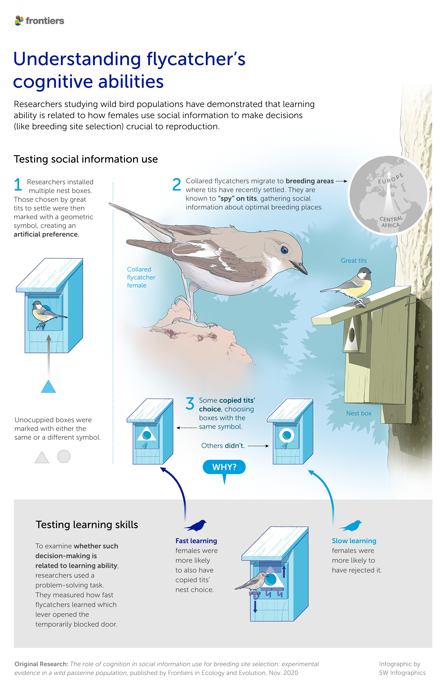
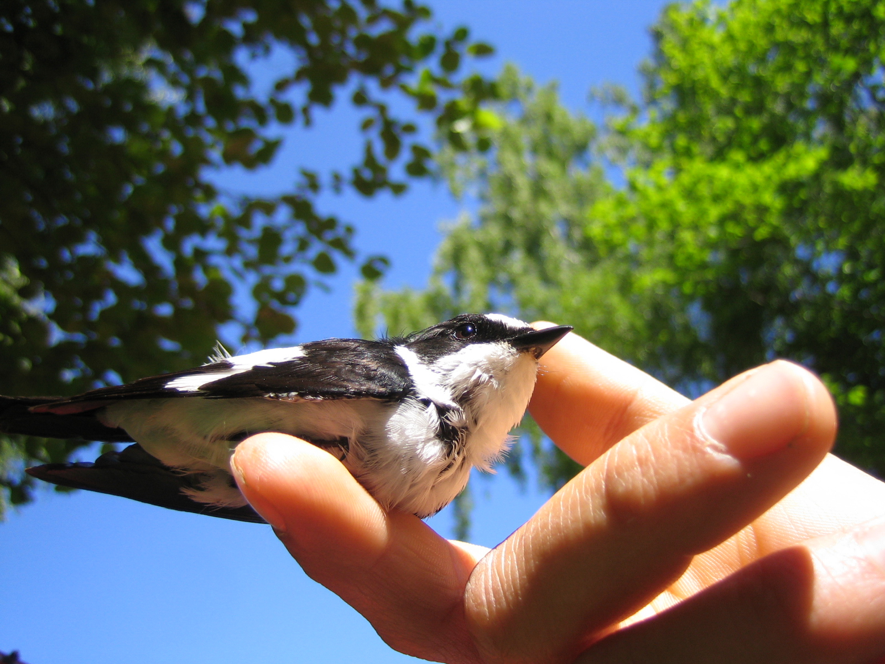

Better learners in collared flycatchers are more likely to copy information from competing species
Researchers have shown for the first time in wild birds that the capacity to use information from competing species when choosing a nest site depend partly on individual cognitive ability.In the collared flycatcher, females that learned to solve a cognitive task faster were more likely to copy the nest site choices of great and blue tits, species that breed in the same area and forage on the same insects.
aperture':'0','credit':'','camera':'','caption':'','created_timestamp':'0','copyright':'','focal_length':'0','iso':'0','shutter_speed':'0','title':'','orientation':'0'}' data-image-title='5w-flycatcher-graphic-v3-page-001' data-large-file='https://frontiersinblog.files.wordpress.com/2021/01/5w-flycatcher-graphic-v3-page-001.jpg?w=663' data-medium-file='https://frontiersinblog.files.wordpress.com/2021/01/5w-flycatcher-graphic-v3-page-001.jpg?w=194' data-orig-file='https://frontiersinblog.files.wordpress.com/2021/01/5w-flycatcher-graphic-v3-page-001.jpg' data-orig-size='5333,8242' data-permalink='https://blog.frontiersin.org/5w-flycatcher-graphic-v3-page-001/' sizes='(max-width: 663px) 100vw, 663px' src='https://frontiersinblog.files.wordpress.com/2021/01/5w-flycatcher-graphic-v3-page-001.jpg?w=1326' srcset='https://frontiersinblog.files.wordpress.com/2021/01/5w-flycatcher-graphic-v3-page-001.jpg?w=663 663w, https://frontiersinblog.files.wordpress.com/2021/01/5w-flycatcher-graphic-v3-page-001.jpg?w=1326 1326w, https://frontiersinblog.files.wordpress.com/2021/01/5w-flycatcher-graphic-v3-page-001.jpg?w=97 97w, https://frontiersinblog.files.wordpress.com/2021/01/5w-flycatcher-graphic-v3-page-001.jpg?w=194 194w, https://frontiersinblog.files.wordpress.com/2021/01/5w-flycatcher-graphic-v3-page-001.jpg?w=768 768w'>

Posted On: 2020-12-22T00:00:00
Posted By: Mischa Dijkstra





Content Date: 2020-12-22
Download Date: 2021-07-10
Document ID: L0C04F2PE